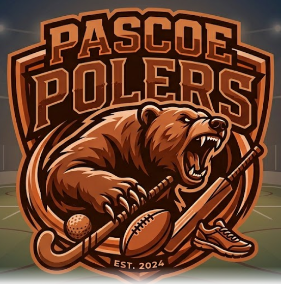

Shaping the Future of Sport, One Performance at a Time.
The Michaelhouse Sports Dome 2075 combines artificial intelligence, advanced sensors and performance tracking technology to help athletes train smarter, improve faster and reach their full potential. Every movement is analysed in real time to provide instant feedback and personalised coaching.
Explore the DomeAI Serve Analysis
Smart Swing Tracking
Performance Analytics
Batting & Bowling Analysis
Movement & Tactical Tracking
Personalised Training
Click on any sport above to discover how futuristic technology helps athletes improve their performance.